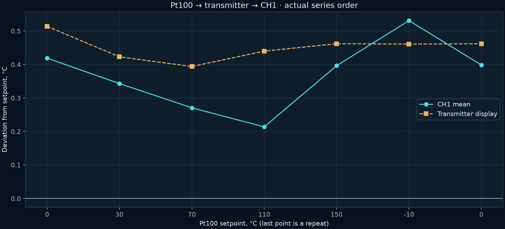
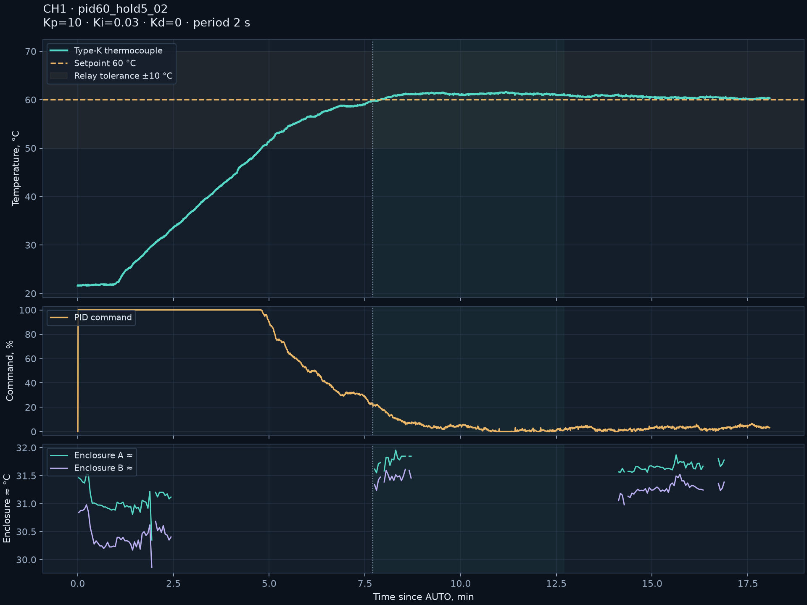

Temperature controller
PID, manual power, cold-junction compensation, RMS current, diagnostics and persistent operating mode. Autonomous operation with the last settings.
Firmware and protocol →A single-channel temperature controller and the tools used to study it: a calibrator, a visible-light camera, a thermal imager and control software.
Source code, hardware materials and measurements in one reproducible package.

PID, manual power, cold-junction compensation, RMS current, diagnostics and persistent operating mode. Autonomous operation with the last settings.
Firmware and protocol →Parameters and calibration, a setpoint/temperature plot, faults, relay functions and warm-up soak time.
Control application →Capture the instrument display and emulate its keys through a separate bridge. USB and Wi-Fi, with a local interface for automation.
Bridge and application →Two sources, transparent overlay, transfer of temperature markers, paired snapshots and a local API.
Observation →BIN/HEX, memory viewing, backup reads, erasing, writing and full-Flash comparison. No manufacturer installer required.
Programming utility →PDF schematics, bills of materials, Gerbers, the available STL part and photographs. The R17 modification on the tested board is documented separately.
Hardware materials →These numbers come from one device. The study retains conditions, gaps and unsuccessful attempts; it does not replace metrological verification.
35 points for B/E/J/K/N/R/S/T. Then direct current-input calibration and the Pt100 → NPT transmitter → 4–20 mA chain. USB influence was investigated by changing connections, without masking it with a correction.
Thermocouple input →

| Parameter | First experiment | Repeat |
|---|---|---|
| Kp / Ki | 2.7 / 0.1 | 10 / 0.03 |
| AUTO peak | 67.8 °C | 61.6 °C |
| After reaching setpoint | 87.5 s | 621.9 s |
Last 5 minutes of the repeat: 60.0…61.1 °C; last minute: 60.0…60.4 °C. These gains apply to this load.
Full analysis of current, PID and enclosure →
UTi260B temperatures at arbitrary points were estimated from the palette. The menu heuristic caused missing data even in ordinary scenes. The visible-light camera sometimes overheated. The relay’s ±10 °C tolerance does not define PID accuracy. The complete fault matrix, electrical isolation and long-term thermal behaviour require separate tests.
Windows x64 and Python 3.12–3.15. A separate environment, with your own ports and cameras selected. Schematics and data are available offline.
python setup.py python run.py controller python run.py thermal python run.py calibrator python run.py programmerBuild, flash and first startup →
78 Python tests, 54,590 C-core checks, STM32 and ESP32-S3 builds. Analysis scripts use saved logs and do not access instruments.
The STM32 build reproduced the 2.5 image byte for byte. Hardware tests are listed separately from software checks.
What was checked →A source package. Binary dependencies are installed with standard tools; personal COM-port bindings and correspondence are excluded.
Architecture, sourced facts, checksums and open questions. Document-confirmed information is separated from hypotheses and unknowns.